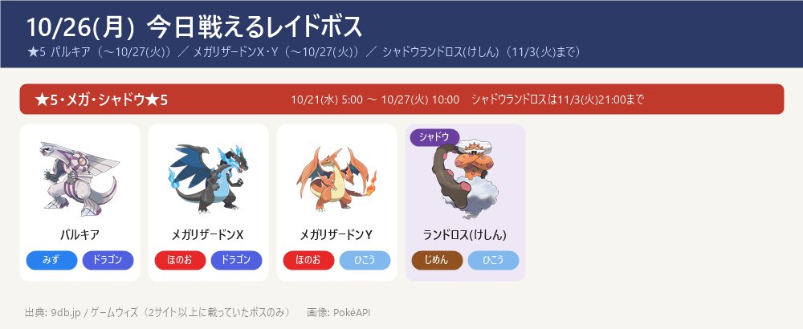
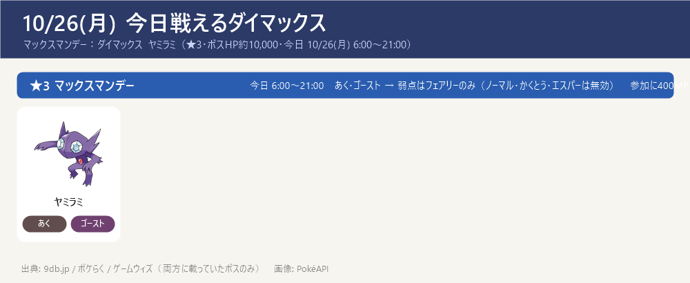
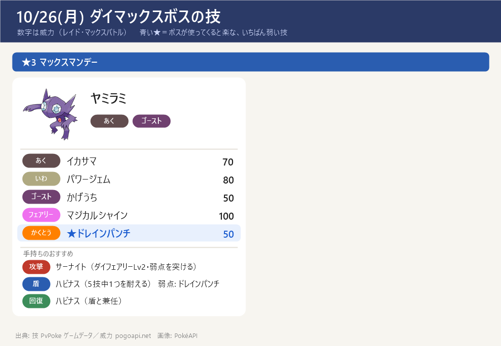

今日のポイント
- 【予約メモ】パイルのみをためる（10/29 ゴースのスポットライトアワーまであと3日）：ポケストップ・ジムでパイルのみを集め、ほかのきのみより先に使わない。ゴースのアメ集め（ゲンガーの強化）に使う
- 今日 6:00〜21:00 マックスマンデー：ダイマックス ヤミラミ（★3・ボスHP約10,000）。あく・ゴースト → 弱点はフェアリーのみ（ノーマル・かくとう・エスパー技は無効）。攻撃はサーナイト（ダイフェアリー Lv2・フェアリーを突ける）。盾はハピナス（ゴースト技が無効・HPで受ける）。※メタグロスはあく・ゴースト技が2倍なので受けに使わない。参加に400MP
- ▶ ダイマックス ヤミラミのくわしい攻略（受け役カード・パターン別の作戦・ソロ/人数の目安・育成価値）：攻略ページを開く
- 【締切近い】GOパス10月デラックスのキラチャームは 11/8(日) 23:59 まで。GOパスのポイント獲得は 11/3(火) 10:00 まで、報酬の受け取りは 11/5(木) 10:00 まで
- ★5はパルキア（〜10/27(火)）、色違いあり（みず・ドラゴン）→ 弱点はドラゴン・フェアリー技
- メガレイドは メガリザードンX・Y（〜10/27(火)）。X（ほのお・ドラゴン）はいわ・じめん・ドラゴン・フェアリー技、Y（ほのお・ひこう）はいわ技が4倍が弱点
- 11/14(土) ダイマックス ディアルガに向けて強化を進める：カイリキー（カウンター）・ドリュウズ（マッドショット）・受けのメタグロス。スポットライトアワー（すな2倍）などで貯めたすなを強化に回す
- マックス技の強化は サーナイト（ダイフェアリー Lv2）が完了 → 次はドリュウズ（ダイアース Lv1→Lv2）。くわしくはダイマックス育成順ページ
- 今日（月）の時間限定イベントはマックスマンデー（ヤミラミ 6:00〜21:00）だけ。明日 10/27(火) 10:00 からハロウィン2026 パート1が始まり、パルキア・メガリザードンX/Y のレイドが終了。今夜は満月でガチグマに進化可能（夜のみ・出典は9dbのみ）
東京の巣：東京の巣 10/22(木)〜11/5(木)（別ページ）
今日戦えるレイドボス
★5 パルキア（〜10/27(火)）／ メガリザードンX・Y（〜10/27(火)）／ シャドウランドロス(けしん)（11/3(火)まで）
- ★3・★1（通常レイド）とシャドウ★3/★1 は 2サイトで一致する確定情報が無い → 当日ゲーム内で確認を（下の「サイトで違っていた点」）

今日戦えるダイマックス
マックスマンデー：ダイマックス ヤミラミ（★3・ボスHP約10,000・今日 10/26(月) 6:00〜21:00）
- ダイマックス ニューラ（★2）は昨日 10/25(日) 21:00 で終了。今日 10/26(月) は マックスマンデー：ヤミラミ（★3・6:00〜21:00）に入れ替わり
- ヤミラミは あく・ゴースト → 弱点はフェアリーのみ（ノーマル・かくとう・エスパー技は無効）。攻撃はサーナイト（ダイフェアリー Lv2）でフェアリーを突く。盾はハピナス（ノーマルなのでゴースト技が無効・HPで受ける）。※メタグロスはエスパーで あく・ゴースト技が2倍なので受けには使わない
- ※ここに載せたのは9db・ポケらく・ゲームウィズで一致したボスだけ（今週のマックスマンデーはヤミラミ）。9db.jp にはほかに ★1〜★3 の多数が載っているが、ポケらくの「出現中」一覧とは一致しない → ゲーム内で確認を
- 【各ボスのスペシャルアタック候補】（下のカード。数字はレイド・マックスバトルでの威力。★＝ボスが使ってくると楽な、いちばん弱い技（ボスと同じタイプの技は1.2倍で計算。こちらのポケモンとの相性は見ていない）。戦闘中に技名が出たら受け役を合わせる）


サカキ対策（シャドウゼクロム）：攻略ページへ（別ページ）
締め切り・やること：まとめページへ（別ページ）
この先の予定（タップで開閉）
- 10/27(火) 10:00〜 ハロウィン2026 パート1 開始（〜10/31(土) 20:00）／ パルキア・メガリザードンX/Y レイド終了（10/27(火) 10:00）
- 10/28(水)〜 ★5 ギラティナ(オリジン) ／ メガヤミラミ、18:00〜19:00 レイドアワー：ギラティナ(オリジン)
- 10/29(木) 18:00〜19:00 スポットライトアワー：ゴース（進化させるとXP2倍）→ パイルのみを貯めてゲンガー用のアメ集め
- 10/31(土) 14:00〜17:00 スーパーメガレイドデイ：メガシャンデラ
- 11/1(日) 10:00〜11/5(木) 20:00 ハロウィン2026 パート2
- 11/3(火) 10:00 GOパス10月のポイント獲得終了 ／ 11/5(木) 10:00 報酬受け取り終了
- 11/8(日) 23:59 GOパス10月デラックスのキラチャーム使用期限
- 11/9(月) 10:00〜 ワイルドエリア Into the Wild（攻略大百科・ゲームウィズでは「ワイルドウィーク」）開始（〜11/13(金) 20:00）：王の姿のザシアン・ザマゼンタの ★5 レイド。18:00〜19:00 レイドアワーはザシアン。GOパス デラックスを最後までクリアで ぎんのおうかん（ザシアンの攻撃特訓用）。ポイント獲得は 11/15(日) 18:00 まで
- 11/10(火) 18:00〜19:00 レイドアワー：ザマゼンタ（王の姿にする ★5 レイド）
- 11/13(金) 20:00 ワイルドエリア Into the Wild 終了（ザマゼンタを王の姿にするのは今日まで）
- 11/14(土)・15(日) GOワイルドエリア：グローバル（ダイマックス ディアルガ・パルキア）→ ボス別の攻略ページ・育成順ページ作成済み（GitHub にも公開）
- 11/15(日) 18:00 GOパス（Into the Wild デラックス）のポイント獲得終了 → ぎんのおうかん確保。報酬の受け取りは 11/17(火) 23:59、ぎんのおうかんの使用は 11/22(日) 23:59 まで
サイトで違っていた点（タップで開閉）
- 10/25(日)で終了したもの: ダイマックス ニューラ（★2・あく・こおり）は 10/25(日) 21:00 で終了 → 今日 10/26(月) から マックスマンデー：ヤミラミ（★3）に入れ替わり（今日は対象外）
- マックスマンデー ヤミラミの★・HP: ポケらくの対策ページ（post114652）・ゲームウィズ（show/578874）はともに★3。ボスHPは約10,000（ポケらく・Pokebattler一致）・ボスCP約19,169（Pokebattler）と★3相当に大きい。9db のみ★2（捕獲個体のMaxCP 843から）→ 対策ページ2つとHPを重視して★3・HP約10,000に更新した（以前は9dbに合わせ★2としていた）。時刻 6:00〜21:00 は ポケらく で確認（確定）。くわしくは攻略ページ /topics/dmax-sableye/ 参照
- マックスバトルの週: 9db はマックスバトル期間を 10/26(月) 5:00〜11/1(日) 21:00 と表記。ポケらくはマックスマンデーのヤミラミを 6:00〜21:00 と表記 → 入れ替わり時刻はゲーム内で確認を
- レイド（★5 パルキア・メガリザードンX/Y・シャドウランドロス）: 9db・ゲームウィズで一致（〜10/27(火)）。9db は入れ替わりを 10/27(火) 10:00 と表記 → ゲーム内で確認を
- ★3・★1の通常レイドとシャドウ★3/★1: 2サイトで一致する確定情報が無い → 当日ゲーム内で確認を（10/21から継続）
- ハロウィン2026の区切り: 9db はパート1を 10/27(火)10:00〜11/1(日)10:00 の1ブロック、攻略大百科・ゲームウィズは パート1（〜10/31(土)20:00）＋パート2（11/1(日)10:00〜11/5(木)20:00）に分割 → 表記差。開始 10/27(火)10:00 は一致。終了時刻はゲーム内で確認を
- キラチャームの期限: 攻略大百科（archives/120139）とゲームウィズ（show/578391）で 11/8(日) 23:59 までで一致（確定）。GOパスのポイント獲得終了 11/3(火) 10:00・報酬受け取り 11/5(木) 10:00 は一致
- 満月（ガチグマに進化）: 9db のみ（10/26）→ 参考として今日のポイントに記載（夜のみ進化可能）
- ダイマックスボスの技候補はゲームデータ(PvPoke)から（おんがえし・やつあたりは除外）、威力は pogoapi.net
出典: 9db.jp/pokemongo（開催イベント一覧 data/4351・レイド日程 data/2308・マックスバトル日程 data/20859）／pokemon.gamepedia.jp/go（攻略大百科 今月のイベント archives/77843・10月レイド/マックス archives/120115・GOパス10月 archives/120139）／pokemongo.gamewith.jp（出現中のレイドボス show/60906・GOパス10月 show/578391）／pokemongo-raku.com（マックスバトル出現 post95707）／pvpoke.com ゲームデータ（技候補）
画像: PokéAPI ／ 2サイト以上で一致した情報だけを載せています